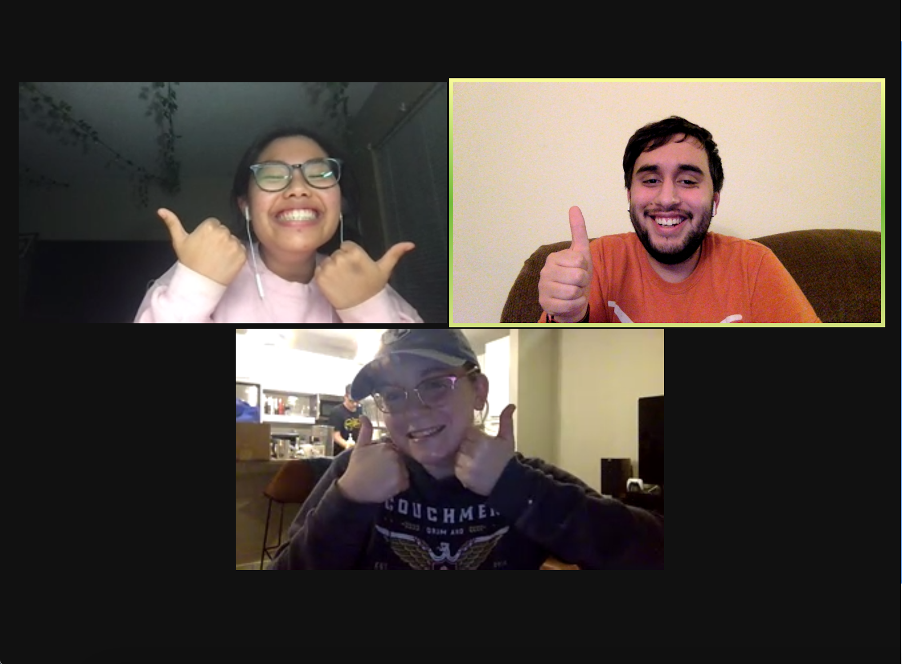

About Us
Our project, What the &$!#% is Gerrymandering?!?, was created to educate the public about the issue of gerrymandering and it’s ridiculously consequential effect it has on our elections. Here we discuss the basics behind gerrymandering (what it is, how it happens, etc.) and how it is affecting our everyday communities. We also have additional content like a map detailing the history of Texas districts, and blog content going over stories related to gerrymandering.

Meet the team
Andres “Andy” Cerda
Content Writer
Andy is a senior Journalism and Government student at the University of Texas at Austin. After college, he plans to attend law school.
Learn moreChristina Peebles
Developer
Christina is in her final semester of studying journalism at UT Austin. After she graduates in May 2021, she will be working full-time as a software engineer with WillowTree in Ohio.
Learn more
Gabi Wongso
Designer
Gabi is a senior studying Journalism and Radio-TV-Film at the University of Texas at Austin. After finishing her undergraduate degree, she is pursuing Masters of Science in Marketing in the same school she loves and plans to work in marketing.
Learn more